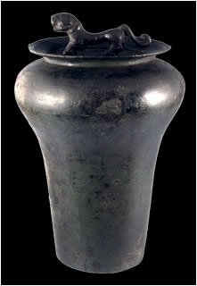

DrumDrums like this would have been used like gongs on the battlefield in southwestern China. Not many drums exist from Ancient China now. Most were made out of wood and leather and these materials rot away over time. This one has a tiger on top of it. In China tigers are traditionally a symbol of protection and good luck. In Chinese folk tales tigers kill evil men and protect the good. People wear tiger charms to keep away disease and evil. 
Bronze drum
|